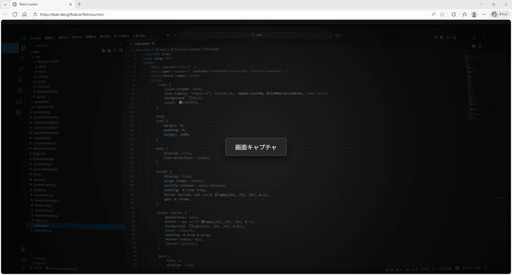
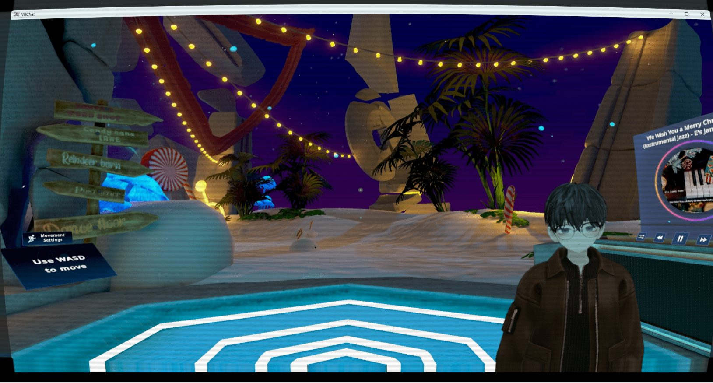
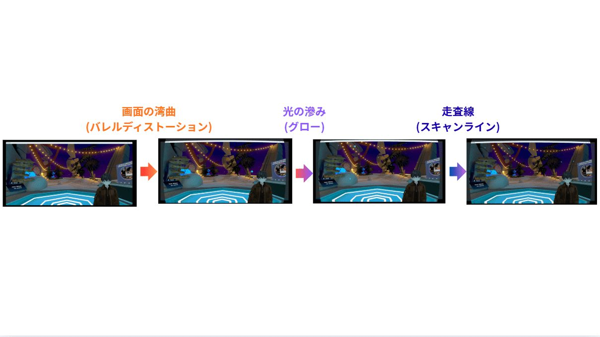

概要
Retro Lumen は、画面やウィンドウをブラウザからキャプチャし、その映像にブラウン管テレビ風のエフェクトを重ねて表示する Web アプリです。キャプチャした映像をキャンバス上でリアルタイムに変形・補正し、レトロな質感へ変換します。
Screenshots


CRT(ブラウン管)表現

ブラウン管らしさを出すために、シェーダ側では主に「画面の湾曲」「グロー」「走査線」の3要素を組み合わせています。
画面の湾曲は、フラグメントシェーダ内でテクスチャ座標に対して樽型の歪み（バレルディストーション）をかけることで実現しています。 画面中央付近はほぼそのまま、上下左右の端にいくほど座標を内側へ寄せることで、丸みを帯びたブラウン管のガラス面を再現しています。 その際、外周はわずかに暗く落とし、角のハイライトが目立ちすぎないようバランスを取っています。
グロー表現では、入力テクスチャの周辺画素をサンプルして、明るい部分をわずかにぼかしながら重ねています。 近傍サンプリングで簡易的なブルームをかける形にとどめ、コストを抑えつつ、文字やハイライト部分のエッジがにじんで見えるようにしています。 これに合わせて色補正も行い、やや暖色寄り・高コントラスト気味のトーンに寄せることで、アナログディスプレイに近い発色になるよう調整しています。
走査線は、垂直方向のテクスチャ座標から周期的なパターンを生成し、1行ごとに明るさを変えることで表現しています。 単純な黒線ではなく、ラインごとにコントラストを変えるマスクを乗算し、明るいラインと暗いラインが交互に並ぶようにして、水平線の存在感だけを強調しています。 これにより、解像度の高い現代のディスプレイ上でも、ブラウン管特有の縞の印象を残せるようにしています。